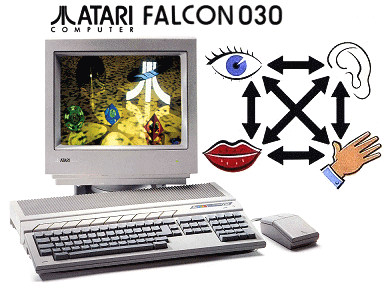
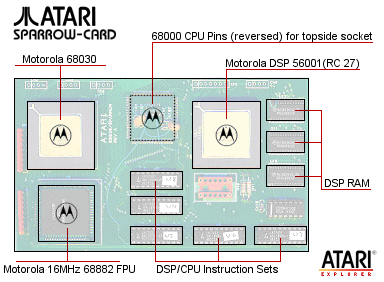
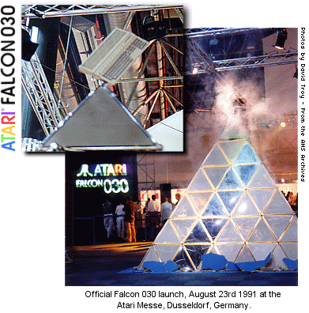
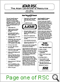
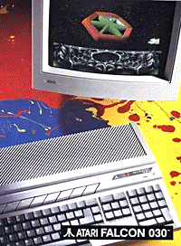

|

The
Atari Falcon was the last Atari personal computer released, but not the
last computer system Atari were designing, and still planning to
release.
Utilising
the powerful Motorola 68030, this Atari system was the most powerful in
terms of technology "under the hood". Although the Atari
TT 030 was the fastest in terms of processing speed, the Falcon had a
number of unique features that made it a desktop system which wiped the
floor with PC's of the day.
The Atari Falcon030 was
originally conceived at the Atari Dallas R&D facility. In its
early incarnation, it was test board which was inserted into a standard
1040STE via the PLC holder of the 68000 CPU. The initial idea was
to test the ST with a higher powered processor system which utilised the
new Motorola DSP. A test version of TOS was used named 2.07 (2.06
was the current release in production models), and enabled engineers to
access the DSP, FPU and 16MHz 68030.

The
name Falcon was used at Atari under Warner management, as it was the
codename for the AtariTel phone system, unfortunately, never released
back in 1984. The Falcon computer released in 1992 was talked
about for years before it's launch. Many rumours about the system
had been accurate, although it was never the system it should have been.
The Falcon had been demonstrated to
developers in early 1992, and around 150 pre-production models had been
made available to European developers by the middle of the same year.
The machine was going to be named FX-1 commercially, and some developer machines
displayed this badge. Atari had processed a number of Trademarks,
which included "Sparrow", and this was also used as the name for developer systems at the time. (Other bird names registered as
Trademarks included "Owl", "Wren", "Robin" and "Bluebird" - Serial
numbers 74147946, 7414909, 7414945, 74147946 US Patent and Trademark
Office).

The
launch was low-key. Production was delayed for 6 months at the
manufacturing facility in the far-east because engineers thought there
was a serious motherboard issue that apparently never surfaced in
reality. When units became available, the only noticeable
advertising was obscure and the marketing spend was nominal - it is to
be noted that senior management were being told at this time that
computer operations were to be "wound down" in order to pull
all available company resources into a new gaming system named Jaguar.
It
is important to note also, that many in the computer division of Atari
were trying to keep the axe from falling on the Falcon project, and the
computer division as an entity, unfortunately the writing had been on
the wall after Jack Tramiel personally ended the Unix project 30 days
after the "official" release date of Unix V was announced in
Germany that year (Summer 1992).
|
 |
|
(This issue of RSC announces
the official arrival of the Falcon030) |
|
|
|
(The zip
file contains all 20 pages of Atari RSC 5.2 in GIF Format) |
Before
the Falcon 030 was even announced, developers had been expressing
interest in Atari's official Falcon announcement, the
Falcon 040.
This was the TT's big brother, and it was hoped that Atari would
demonstrate the system with the new Unix platform at the Atari Fair in
Germany 1991. To many peoples surprise (and disappointment), Atari
demonstrated the Falcon 030 at CeBit in 1992.
The
Falcon 040 had been all but completed, and the case design was ready to
go. The Atari Falcon 030 was the only "taste" the public
got of the possible 040 product that may have been very close to
completion.

The Falcon030 had many
unique features for a computer system of the day. Built-in SCSI 2,
LAN port (apple-talk protocol/connector), Microphone input, Direct DSP
connection, true colour graphics with 3D shaded GUI multi-tasking OS
among many advanced features.
|